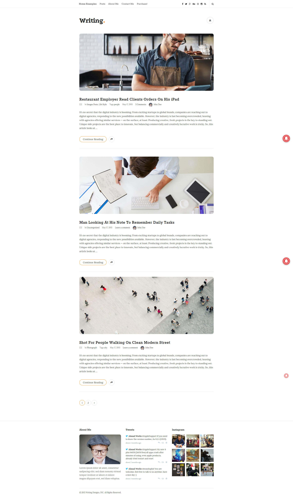
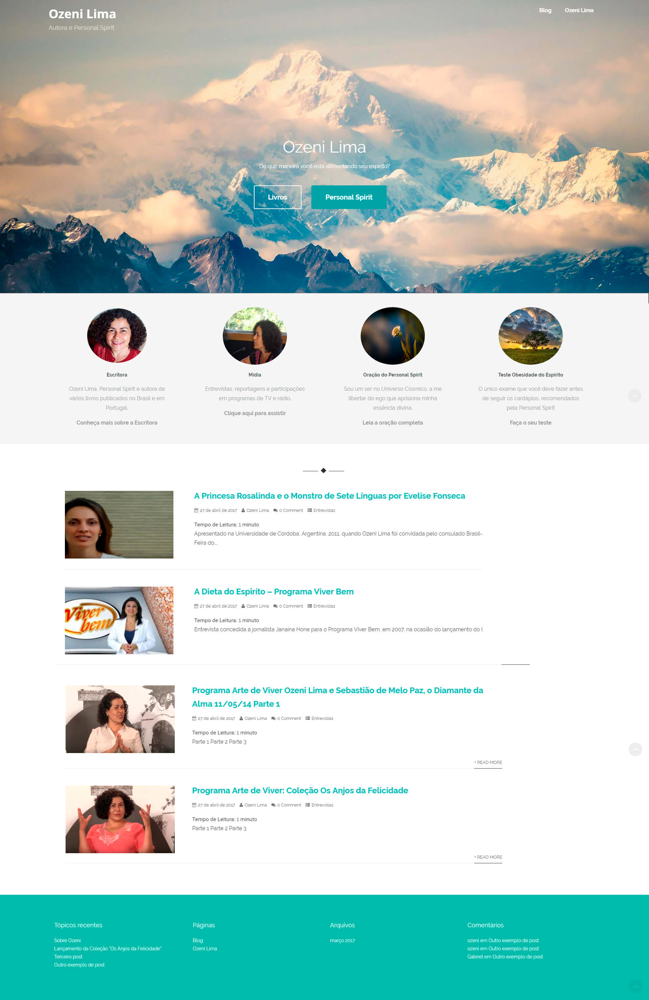

Ozeni Lima
Escritora com livros publicados tanto no Brasil como Portugal - 2017
O projeto
Escritora que também trabalha na FATEC-RL, ela pediu ajuda de uma equipe de alunos para que pudessemos realizar a criação de um site e blog para que ela escrevesse seu conteúdo. Eu fiquei com a parte de criar um mockup e implementar o mesmo no wordpress.
A experiência foi extremamente rica, tanto para aprender a ter um contato com os clientes quanto para modificar o wordpress ao máximo. Ao finalizar o site aprendi também a parte de aumentar o campo de alcance. Os meus colegas de projeto acabaram ficando com o gerenciamento de conteúdo, contato com o cliente, promoção do canal do youtube e instalação da área de contato.
Conceito que fiz após contato inicial com cliente

Imagem do site funcionando no meu servidor após revisões da cliente

Exemplo de post

Tela de criação de post